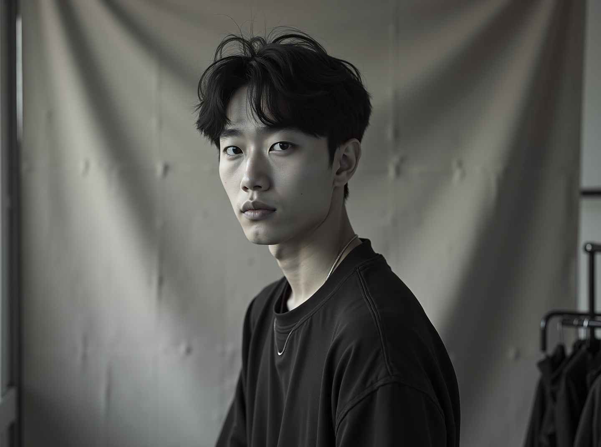
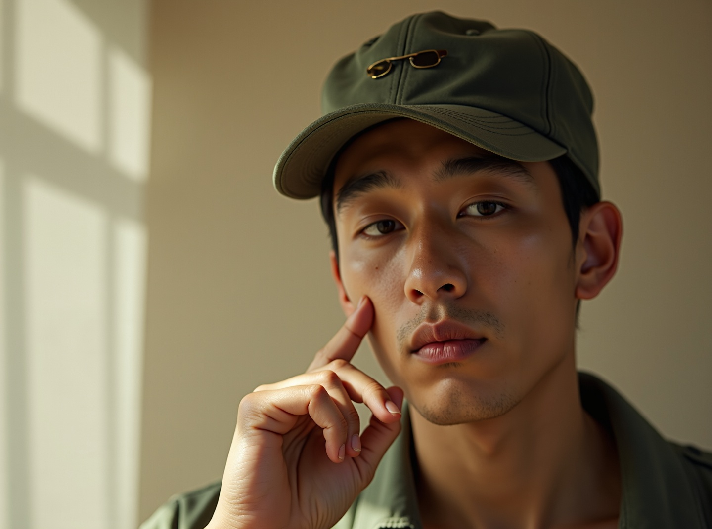

1% OF
EVERYTHING.
ILLPRO는 평범함을 거부하는 1%의 사람들을 위해 만들어진 한국 스트릿웨어 브랜드입니다.

— PHILOSOPHY
덜 만들고, 더 오래 입는다.
한 시즌에 단 8개의 SKU. ILLPRO는 빠른 트렌드 대신 5년을 입어도 망가지지 않는 단단한 옷을 만듭니다. 매년 같은 형태를 반복할 만큼 완성된 패턴, 그 위에 시즌의 디테일만 얹습니다.
— MATERIAL
가장 무거운 코튼만.
14oz 헤비웨이트 코튼, 13oz 셀비지 데님, 7게이지 청키 니트. ILLPRO가 사용하는 모든 원단은 시장 평균보다 30% 이상 무겁고 두껍습니다. 입는 순간 무게로 증명되는 옷.

— MADE IN KOREA
모든 봉제, 한국에서.
해외 OEM 없이 100% 국내 봉제. 서울과 경기 외곽의 작은 공장 3곳과 직접 협업합니다. 작업자 한 명이 한 벌을 끝까지 책임지는 단일공정 방식. 옷에 작업자의 이니셜이 새겨집니다.